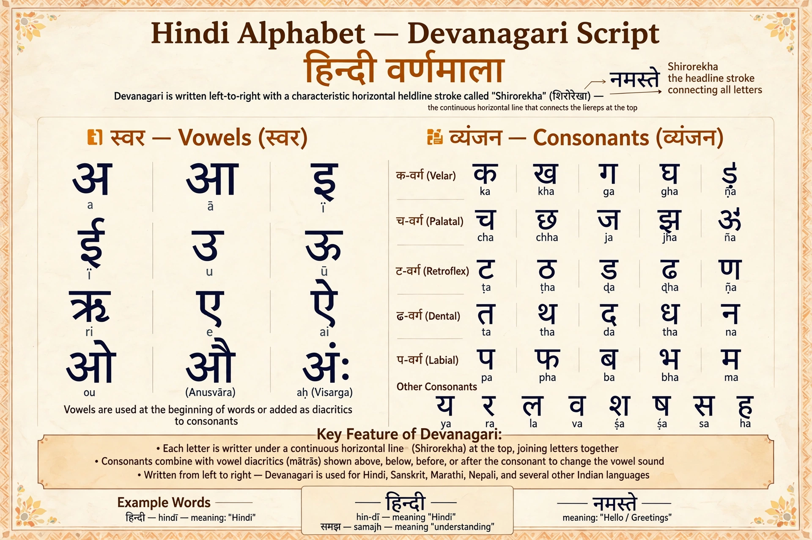

Hindi

Native to: northern India
Native speakers: c. 345 million; c. 600 million total
Language family: Indo-European → Indo-Iranian → Indo-Aryan
Writing system: Devanagari
Official language in: India (with English), Fiji
Hindi (हिन्दी) is an Indo-Aryan language of the Indo-European family, spoken chiefly in northern India. It is one of the two official languages of the Government of India, alongside English, and one of the 22 scheduled languages of the Indian constitution. With roughly 600 million speakers in total, it is among the most spoken languages in the world.
History
Hindi descends, through the Prakrits and Apabhraṃśa, from Sanskrit. Its standard form is based on the Khari Boli dialect of Delhi and western Uttar Pradesh. Hindi and Urdu share a common colloquial base (Hindustani) but diverge in script and learned vocabulary: Hindi is written in Devanagari and draws heavily on Sanskrit for formal words, while Urdu uses a Perso-Arabic script and Persian and Arabic loans. Under British rule Hindustani spread as a lingua franca; after independence in 1947 Hindi in Devanagari was adopted as an official language of the new republic.
Grammar
Hindi has subject–object–verb word order, two genders, postpositions rather than prepositions, and a split-ergative system in perfective transitive clauses. Its phonology distinguishes aspirated and unaspirated stops and retroflex consonants inherited from Sanskrit. See Grammar and Phonetics.
See also
Sanskrit · Arabic · Indo-European languages · Writing system